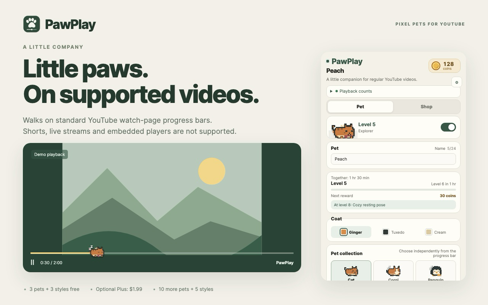
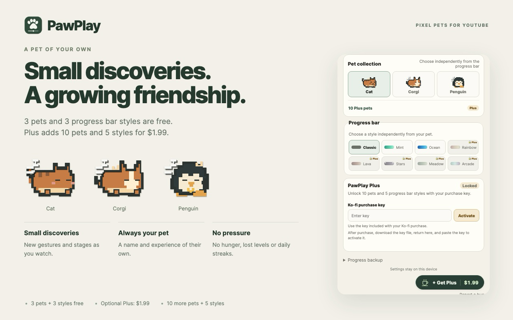
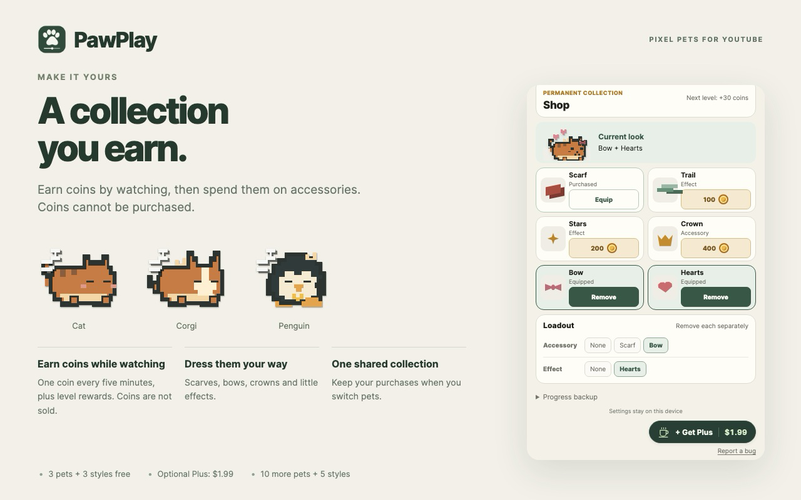

Pick a friend
Cat, corgi, or penguin? All three are free. Each has its own name, level, and growth.
Pixel pets for YouTube
A cat, a corgi, or a penguin walks along the progress bar on ordinary YouTube videos. Give it a name and let it grow while you watch.

Choose a pet once. It keeps you company whenever an ordinary YouTube video is playing.
Cat, corgi, or penguin? All three are free. Each has its own name, level, and growth.
Playing videos adds active watch time. Your pet learns little gestures and grows from baby to companion. Pause, and it rests.
Earn a game coin every five minutes, plus level bonuses. Spend them on a scarf, bow, crown, trails, stars, or hearts.
Individual growth, a shared collection, and a cozy place to check in.


The free version includes three pets and three progress bar styles. PawPlay Plus is optional.
Cat, corgi, penguin, and three progress bar styles are included. Game coins still unlock accessories and effects and cannot be bought with money.
PawPlay Plus adds ten pixel pets and five progress bar styles as a one-time $1.99 purchase on Ko-fi outside the extension.
The purchase key is checked locally. No account or internet connection is needed to activate it. Keep the key separately for a reinstall or another Chrome profile.
Report a problem or suggest a pet on GitHub. For a bug, include your browser version and what happened. Never share passwords or private browsing data.